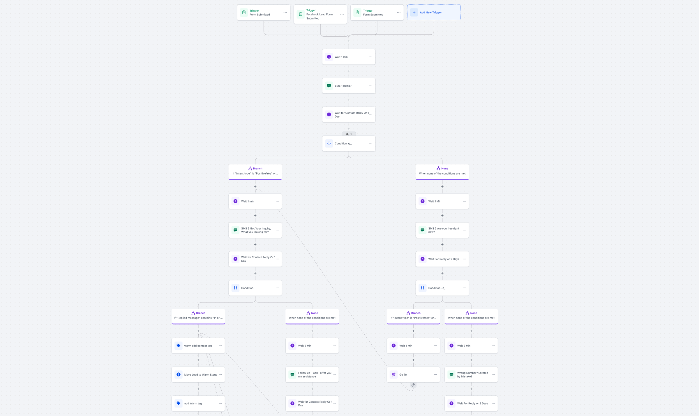
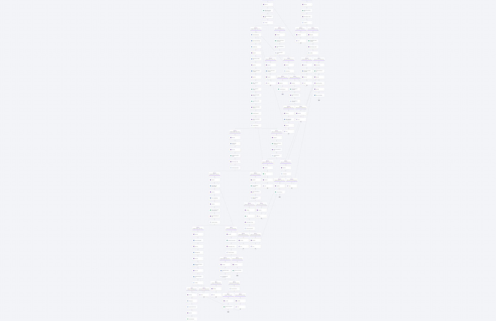

Product · pre-construction real estate · 2020-21
The human at the far end was someone looking at a presale tower at eleven at night, wanting to know whether the parking stall was included and whether they could assign the contract before completion. Those are not questions a brochure answers, and they are not questions an agent answers at eleven at night. The product answered them in seconds, worked out from the reply whether this was a buyer or a browser, and woke the agent only when it was worth waking him. Getting that to work took us three goes, over three different technologies.
Side was a pre-construction sales platform an individual real-estate agent could buy. It shipped in 2020-21, before generative AI. The revenue system it sat inside is a separate page. This one is about the product and the three attempts at its hardest part.
Before any of that there was a data problem. Presale inventory has no MLS. There is no single source of truth for what is selling, at what price, with what deposit structure or completion date, so the first build was a data layer: an Airtable and Postgres pair fed by automated extraction against developer and listing portals, with a timestamp on every extracted row. The production base carried 17 linked tables and 374 projects, covering pricing, developer, completion dates, amenities and architect.
Everything the conversation layer could say, it said out of that base.
One naming note. This one confuses people. Side.io was this product. The intelligence platform Side built years later for the studio's clients carries the same domain name and is a different system. There is a map of the names at the bottom of the page.
The first version had no model in it at all. It was a conditional workflow in GoHighLevel, triggered by form and paid-social lead submissions, branching on tagged intent into stage moves, tags and an agent handoff. It began at around 50 branching nodes and grew past 120.
Over a six-week window covering more than 2,000 unique engagements it held about a 1% conversion rate, which was the industry baseline. So it worked, and it did not win. What killed it was maintenance: past a certain branch count nobody could reason about the tree, and the company's own record of the period says translating the expanding conditional framework into code had become unmanageable.
I keep the screenshots. They are the honest picture of what generation one was. A reviewer who assumes the early system was an LLM is going to ask which model produced the result, and the answer is that there was no model. The result came from the operating design.


The replacement was a set of in-house natural-language understanding models, trained on transcripts from 8,000 SMS and web-chat turns captured between May 2021 and August 2022 from real buyer conversations, de-identified and segmented before annotation. The annotation ran under a written process with a spot-check on a sample, and new examples fed a nightly retrain. Recordings had a retention limit and the store was encrypted.
The models were built by our internal engineering team, led by our CTO. The team ran three deliberately different pipelines against the same problem so we could compare, with an entity extractor and a confidence threshold below which the system handed the conversation to a human.
That generation is where the funnel numbers moved. Lead-to-transaction conversion went from 1% to 3%, and the layer handled more than 1,000 buyer conversations a day.
The part I would want a technical reviewer to hear is the piece that did not work. A separate 2024 collaboration with a University of British Columbia master of data science capstone team produced transformer-based lead-warmth classifiers, and they reached 0.55 to 0.59 accuracy with 0.33 recall on the hot class. The team's own report says the end goals were not reached with the data available. We did not put them in the funnel. Two years of hindsight says the labels were the problem and we should have spent that quarter on the annotation guide.
The data layer both generations answered out of: an Airtable and Postgres hybrid with 17 linked tables (pricing, developer, completion dates, amenities, architect) and 374 project records, ingested by scheduled extraction tasks against developer and listing portals, with a per-row extract timestamp so a stale answer could be identified as stale. The conversation layer got most of the attention. This is the thing that made its answers true.
The third generation replaced the in-house classifiers with LLM-based conversational agents once those became reliable and affordable enough to put in front of buyers. It is the shortest section here, and it was the least interesting engineering decision I made on this product. By then the hard work was done: we knew the intents, we had the transcripts, and we knew what a good handoff looked like.
I founded the programme and I defined the product. I identified the segment, set the customer journey, set what the conversation layer had to deliver, and chose when to make each generational transition. The applied research ran as a federally supported project with a filed description, objectives and deliverables, and I wrote those.
I directed a small team through all three generations, and I reviewed what each one had to hit before it replaced the last. What I did not do: I did not build the models. Our CTO and the engineering team built the natural-language work, and the capstone team built the classifiers that did not make it. That division is recorded in what the company wrote at the time to a federal agency, in several separate documents, and I would rather be the person who states it plainly than the one who lets a resume imply otherwise.
What I take from it is narrower than a resume line. Three generations of the same problem taught me that the model is rarely the constraint. The constraint was the labels, the data layer underneath, and whether the handoff carried enough context for a commissioned salesperson to trust it.
Contemporaneous documents, redacted. Amounts, named officials, client names and personal data are removed.
Pitch deck, 2023 (product-story slides only) Project description filed with NRC IRAP, 2023
The IRAP filing is the one I would read first. It was written in 2023 for a federal funding application, so it had to be specific about objectives and deliverables, and its phase order is the same acquisition-to-close sequence I still design around.